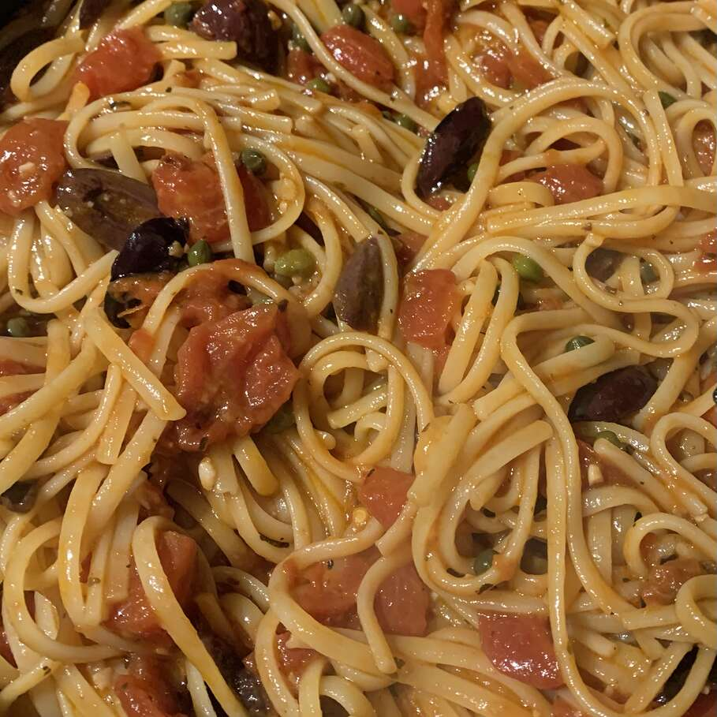

Pasta alla Puttanesca

Description
Named after the Italian ladies of the night, this sauce goes well with any type of spaghetti.
Ingredients
- 400g pasta
- 3 cloves of garlic
- 500g tomato sauce
- 2 anchovy filets
- capers
- 200g black olives
Steps
- Bring a large pot of lightly salted water to a boil. Cook the pasta in the boiling water until al dente
- Heat the olive oil in a skillet over low heat. Cook the garlic until golden then remove it. Add the anchovies, olives and lastly the tomato sauce. Cook while stirring occasionally.
- Once the pasta is cooked, remove it from the boiling water and add it to the tomato sauce mixture. Toss and serve.